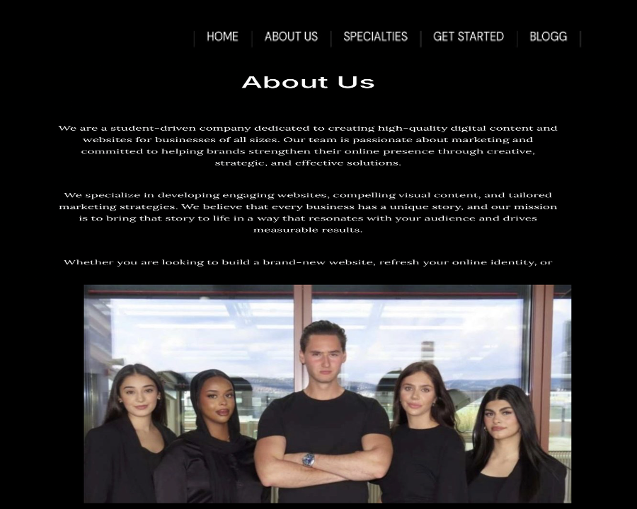
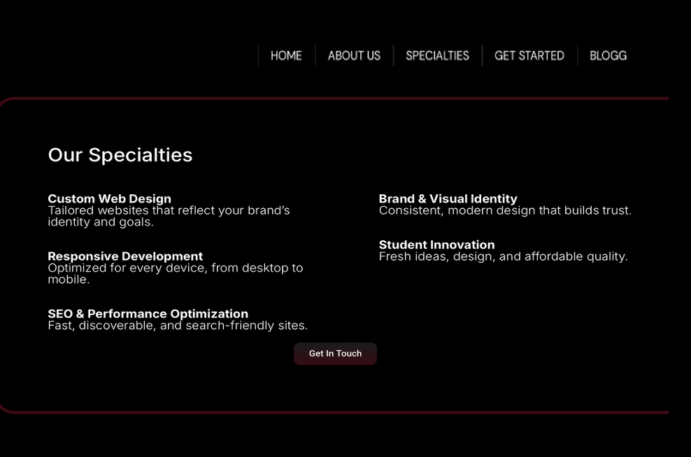
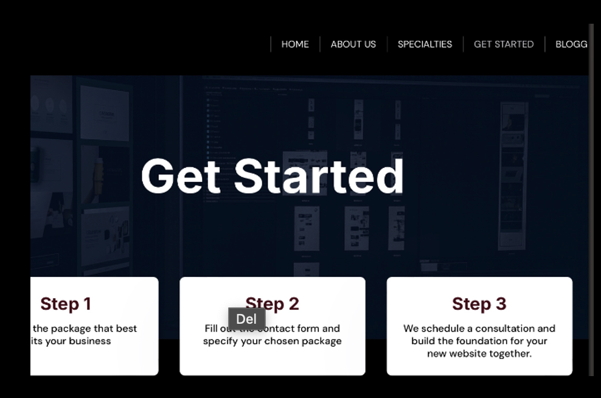
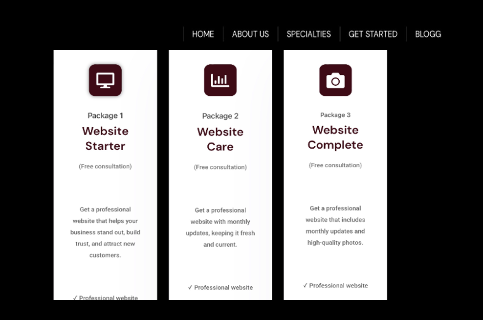
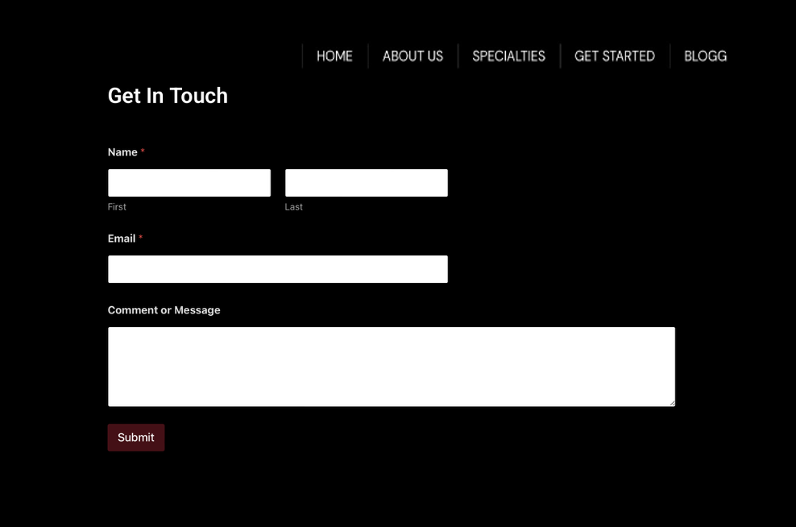
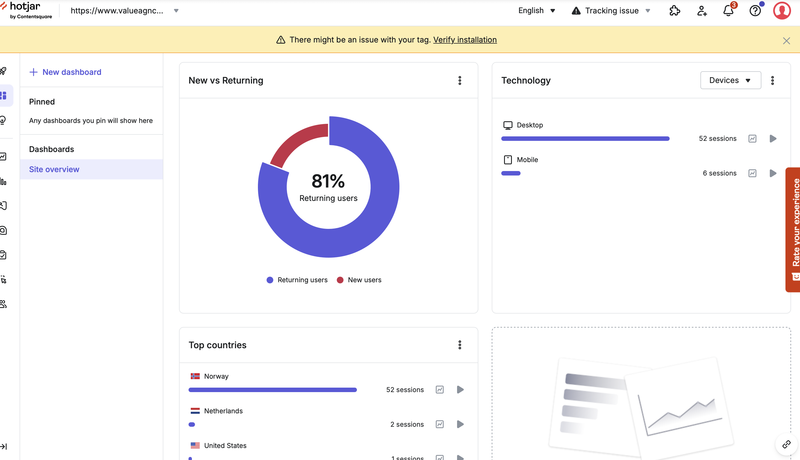
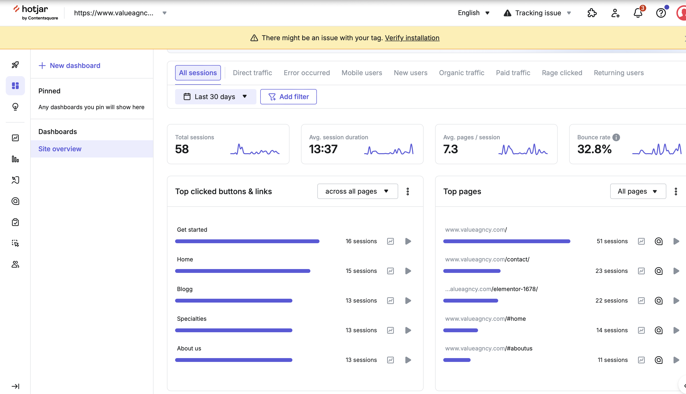
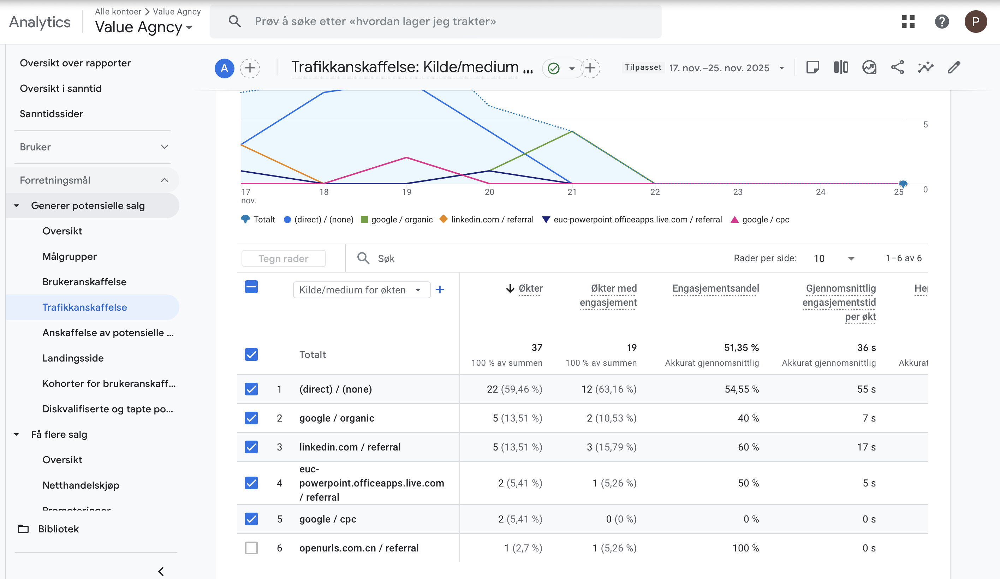
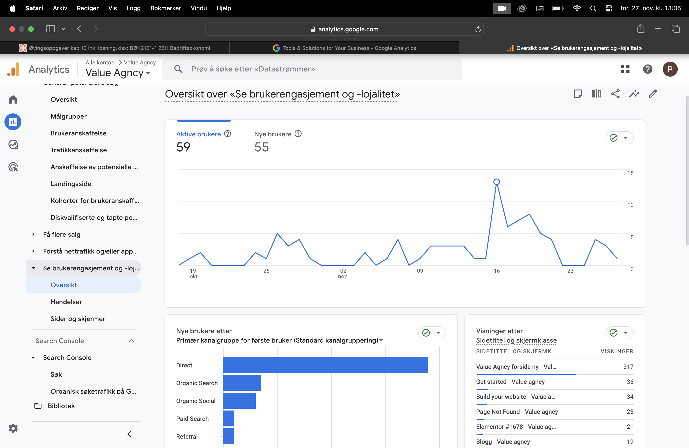
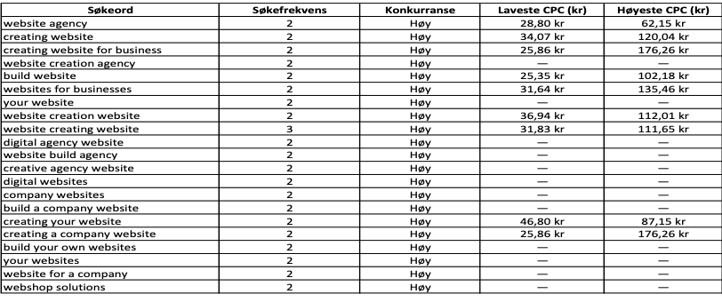

01 — 06
Nettsidebehandling
I dette prosjektet hadde jeg hovedansvar for design og analyse, med fokus på å undersøke hvordan virksomheten kunne styrke sin digitale tilstedeværelse gjennom økt synlighet og strategiske tiltak. Nettsiden ble utviklet ved hjelp av ulike plugins, der Elementor var det sentrale verktøyet for utforming og strukturering. Bildene viser ulike deler av arbeidet og prosessen bak prosjektet.





03 — DATA OG INNSIKT
Data og innsikt.

01 — HOTJAR
Brukeratferd
Hotjar ble brukt for å få innsikt i hvordan brukerne beveget seg rundt på nettsiden. Dette gjorde det mulig å identifisere mønstre i brukerens interaksjon med innholdet.

02 — HOTJAR
Brukeropplevelse
Analysen ga et bedre grunnlag for å forstå hvilke deler av nettsiden som fikk oppmerksomhet, og hvordan brukerne navigerte gjennom siden.

03 — TRAFIKK
Trafikk
Trafikkdata ble brukt for å undersøke hvor besøkene til nettsiden kom fra. Dette gjorde det mulig å vurdere hvilke kanaler som bidro til synlighet.

04 — TRAFIKK
Digital synlighet
Ved å se på trafikken kunne jeg få et tydeligere bilde av hvordan nettstedet presterte digitalt og hvilke områder som kunne forbedres.

05 — SØKEORD
Søkeord
Søkeordsdata ble brukt for å få bedre innsikt i hva brukerne søkte etter, og hvilke søkeord som kunne være relevante for å styrke nettstedets synlighet.